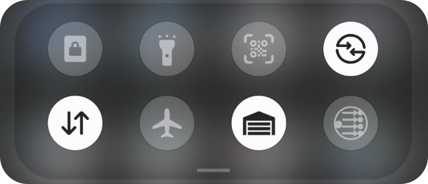
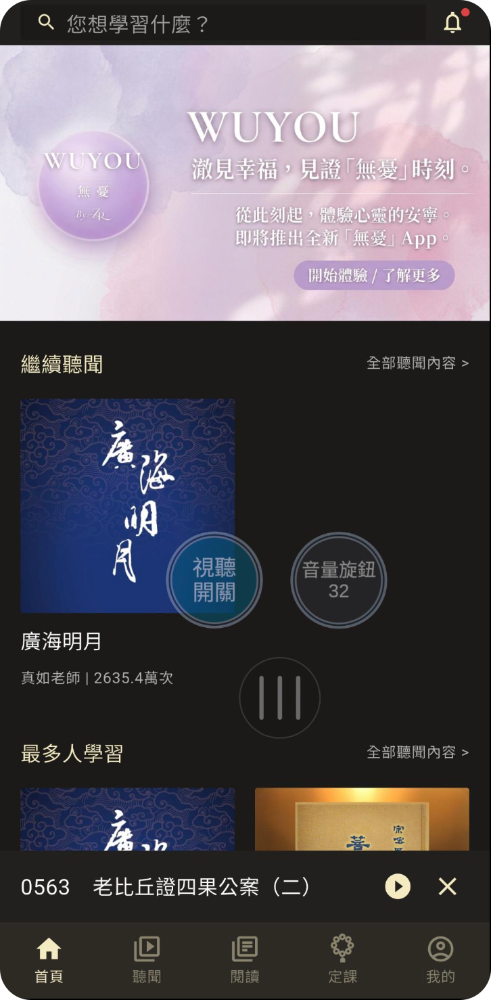
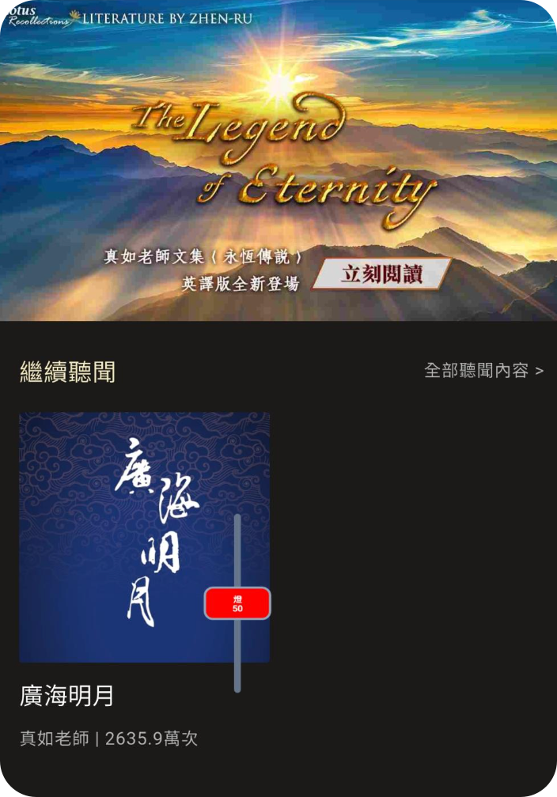
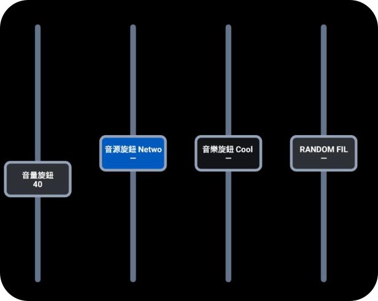

不使用 Companion HTTP 按鈕 API，支援按下、狀態與按鈕畫面。
一個 App，連接所有 Companion 主機
Wi‑Fi 優先使用區網；無法連線時自動改走 Cloudflare 網際網路網址。
1×1、3×2、4×4、旋鈕與混合面板，按鈕及底圖透明度可分別調整。
Widget 與 Android 懸浮旋鈕可個別停用操作，只保留 Satellite 即時狀態，避免誤觸。
Android 可顯示圓形懸浮啟動球，在任何 App 上方點一下直接開啟 Companion，並可調整透明度與大小。
Android 提供可縮放的單路與四路 Fader Widget，以及懸浮 Fader。輕點滑軌即可逐格旋轉，變數只需輸入 WiiM:volume 這類簡短格式。
每個控制項與小工具可選擇不同主機，並支援 CSV 批次匯入與匯出。
實機畫面
控制按鈕，出現在你需要的地方
不用先開啟 Companion 網頁。工具列、主畫面 Widget 與其他 App 上方，都可以直接操作 Satellite Surface。
01工具列按鈕
下拉就能操作
把常用 Companion 按鈕放進 Android 快速設定。按下後直接透過 Satellite 觸發，內建 Companion 圖示也能清楚辨識。
- 不用開啟 App
- 可自訂名稱與圖示
- 快速隱藏／開啟 Companion App
- 快速隱藏／開啟所有懸浮按鈕
- 區網／網際網路自動切換

02WIDGET 小工具
把 Companion 面板放在主畫面
從 1×1 到 4×4，方形按鈕與旋鈕可混合使用。每顆按鈕顯示 Companion 傳來的圖案、文字與狀態。
- 即時 Satellite 畫面
- 1×1、1×4、2×2、3×2、4×1、4×2、4×3、4×4
- 支援圓形旋鈕與混合配置
03懸浮旋鈕
在任何 App 上方即時控制
可同時建立多顆 1×1 懸浮 Satellite 旋鈕，由 Companion 主機指派按鈕。按鈕透明度、底圖透明度、大小及圓形／圓角方形外框都可個別調整。
- 點中央按鈕：送出 Companion 按鍵操作
- 點上／右半部：右轉一格；點下／左半部：左轉一格
- 可停用操作，作為純 Tally 指示燈
- 快速點兩下，第二下按住 0.5 秒：振動後移動；直接放開則個別隱藏

04懸浮滑桿 · FADER
把即時滑桿疊在正在使用的 App 上
Android 懸浮滑桿可保持置頂，顯示 Companion 按鈕名稱、顏色與對應變數數值。滑桿位置會依設定的最小值與最大值映射，音量、燈光等狀態一眼就能確認。
- 點滑桿上／右半部：右轉一格
- 點滑桿下／左半部：左轉一格
- 只有點中央顯示按鈕，才會送出 Companion 按鍵操作
- 快速點兩下，第二下按住 0.5 秒：振動後移動；直接放開則個別隱藏

05小工具滑桿 · WIDGET FADER
單路或四路，直接放在主畫面
Widget Fader 支援水平與垂直配置。單一路可做成細長的水平控制條，四路面板則能同時對應四顆 Companion 旋鈕按鈕，並即時呈現各自的名稱、顏色及數值位置。
- 水平：左側左轉、右側右轉
- 垂直：下方左轉、上方右轉
- 按鈕透明度與底圖透明度分開調整
- 可停用操作，作為純即時狀態顯示

iOS 捷徑 · ASSISTIVETOUCH
用小白球觸發 Companion
先在「捷徑」App 建立 Satellite 控制捷徑，再將它加入 iOS 輔助觸控。執行時不必跳轉到 Companion App。
建立捷徑
- 打開 iPhone 的「捷徑」App。
- 按右上角
＋。 - 按「加入動作」。
- 搜尋
Companion。 - 選擇「觸發 Companion Satellite 控制項」。
- 點「控制項」，選擇 Companion App 中已建立的控制項。
- 儲存捷徑並自訂名稱。
加入小白球
- 前往「設定 → 輔助使用 → 觸控 → 輔助觸控」。
- 開啟「輔助觸控」。
- 使用以下任一方式加入：
- 「自訂最上層選單」→ 選一個圖示 → 選擇「捷徑」
- 「自訂動作」→ 單點、點兩下或長時間按下 → 選擇剛建立的捷徑
下載 Companion Satellite Mobile
Android
Android 8.0 以上。下載 APK 後允許瀏覽器安裝未知來源 App。
下載 APK · v2.38.11iPhone / iOS
目前提供完整原始碼。Personal Team 簽署無法公開散布安裝檔，請使用 Xcode 與自己的 Apple ID 安裝。
iOS 安裝說明